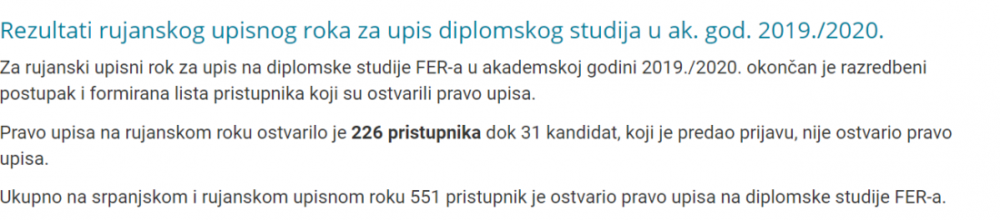
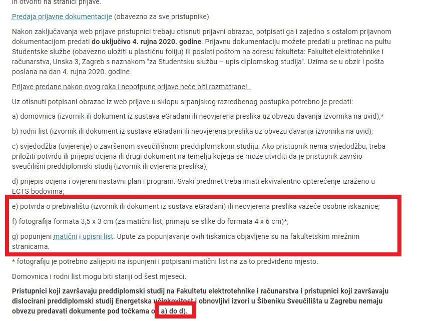

Vidim da još nije otvorena tema.
Ima li netko možda riješenja starih ispita? Ili ako je netko već riješavao pa je siguran u odgovore neka podijeli
https://programmingcroatia.com/2019/09/04/947/
jedino sto sam nasla je ovo(matematike i vis). nije bas najbolje organizirano, ali barem nesta eto glhf xD nadam se samo da netko ima rjesenja i da ce ih objaviti
Koliko se sjećam prije sam čuo da ovaj ispit ima neki niski prag. Sada tražim to i ne mogu naći. Zna netko više o tome?
80bodova je prag
Trolololica Ne mogu nigdje naći da uopće postoji neki prag na ispitu, ima neki link?
Kažu da svi koji prođu prag upadnu jer uvijek ima mjesta. Basically znači treba riješiti 4/30 zadataka točno i svi su full lagani. Razredbeni je 17. i mislio sam krenuti učiti 9. za njega kad mi prođe Automatsko. Ima nekih 20ak ispita već objavljeno i ako hoćete, možemo se organizirati da svatko riješi po 4 npr. i izmjenimo rješenja. Ja svakako možda stavim ali ne znam kolko će mi trebati.
Samo da napomenem, čini mi se da se prošle godine desilo da par ljudi nije upalo makar je zadovoljilo prag, ali - doduše, to se dešava jako rijetko.
HotPotato Jesi li siguran? Piše u obavijesti: “Ukupno na srpanjskom i rujanskom upisnom roku 551 pristupnik je ostvario pravo upisa na diplomske studije FER-a.”

Dok je upisna kvota za diplomski studij 600 studenata. Poprilično sam siguran da ako netko nije upao ili je sjebao razredbeni ili papirologiju.
HotPotato to se još nije nikad dogodilo, uvijek je ostalo dovoljno mjesta za sve koji prođu prag. no ima ljudi koji padnu razredbeni (i ferovaca među njima) ili ne zadovolje upis diplomskog zbog nekog drugog razloga (npr. nepotpuna dokumentacija).
Što se sve trebamo predati do sutra u referadu?
Koliko sam ja shvatio, trebamo predati ispunjen matični i upisni list, fotku i potvrdu o prebivalištu. 
[obrisani korisnik]
Piše mi i u aplikaciji da moram predat onaj obrazac upisni kao što je dosad uvijek bilo pa ću i to staviti. I 100 kn za upis.
Kod upisnog lista, što bi ovdje trebali napisati?
Pleteći medvjedić Imas na dnu primjere za popunjavanje upisnog i matičnog lista
https://www.fer.unizg.hr/studiji/diplomski_studiji/upisi#%23!p_rep_107400!_-57718 skroz dolje file sa svim detaljima.
Pineo evo da sam sebe citiram, za jesenski rok ima 315 prijavljenih, a 314 je slobodnih mjesta - vjerojatno je neka prijava nepotpuna, al baš me zanima što bi se dogodilo da teoretski 20 ljudi ima minimalni isti broj bodova na razredbenom 😁
Jeli treba negdje posebno prijaviti ovaj ispit ili nam se on automatski prijavljiva?
rijesavala sam vis i uopce nisam sigurna u rjesenja pa ako je netko jos rijesavao bila bi zahvalna za feedback o svim greskama, nerjesenim zadacima i da postate rjesenja (abcde) koja ste vi dobili, a da ste sigurni u njih. 🙏
tu je pdf…. https://easyupload.io/q33ty2
dammitimmad a gdje su zadaci?
dammitimmad Koliko znam (a ne znam puno) na svim ovim mjestima gdje se vade kuglice trebaš uzet u obzir redoslijed vađenja kada računaš vjerojatnost, barem sam ih ja tak riješio i uvijek dobio neki od ponuđenih odgovora.
dammitimmad 20.7.2016. 7 zadatak bacamo 3 kocke, vjv da dobijemo točno 2 iste.
Mislim da je to ovako trebalo Prva je bilo koja, druga je točno ta i treća je ostalo i onda još 3povrh2 za kombinaciju kad će koja izaći
prvi do boga https://www.fer.unizg.hr/studiji/diplomski_studiji/upisi/provjera_znanja#%23!p_rep_107401!_-45653 na dnu “primjeri provjere znanja” file